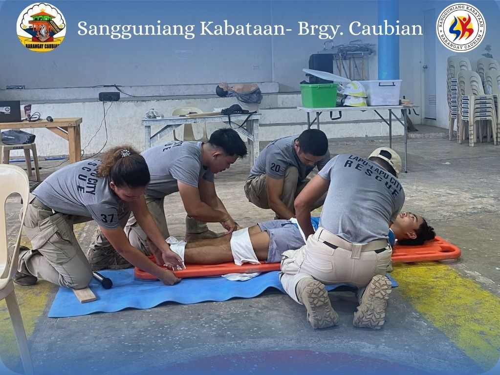
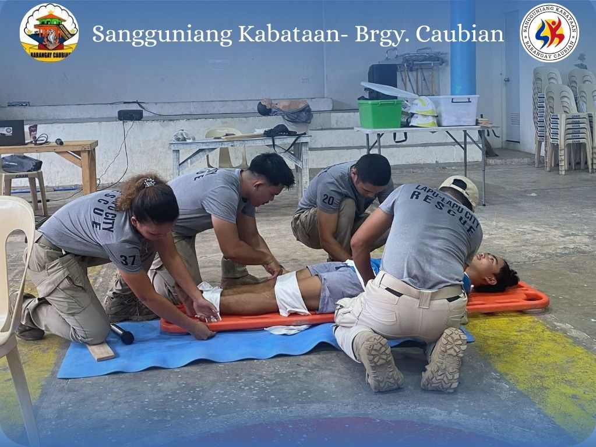
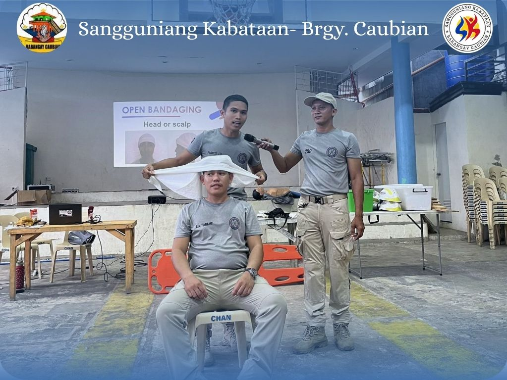
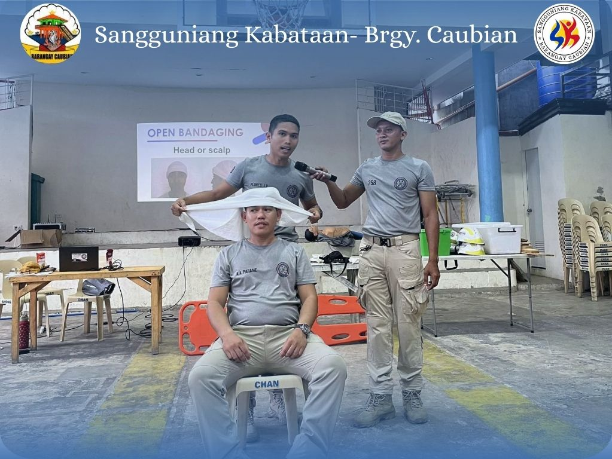
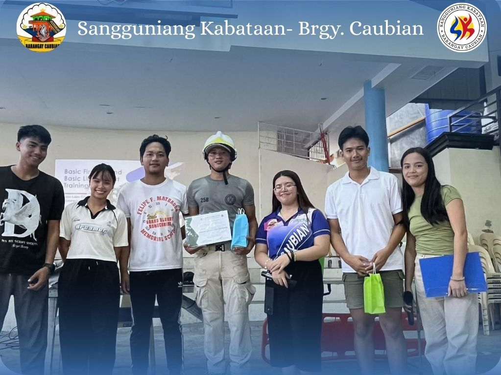
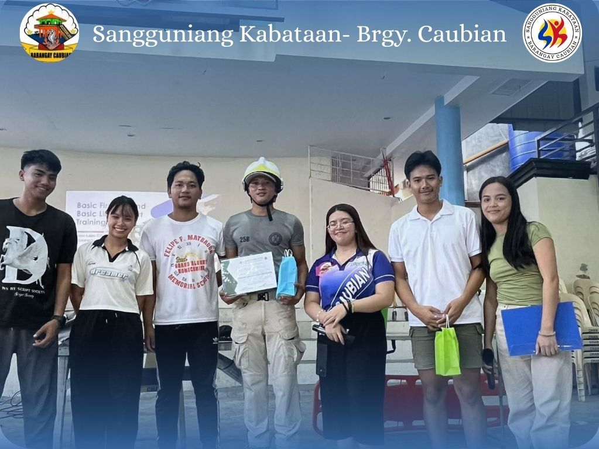
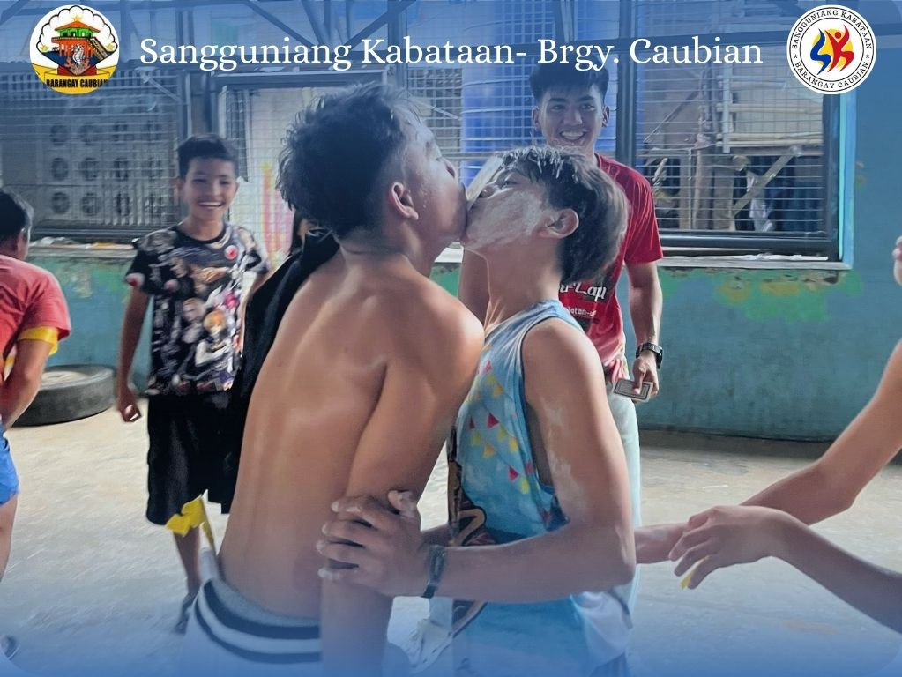
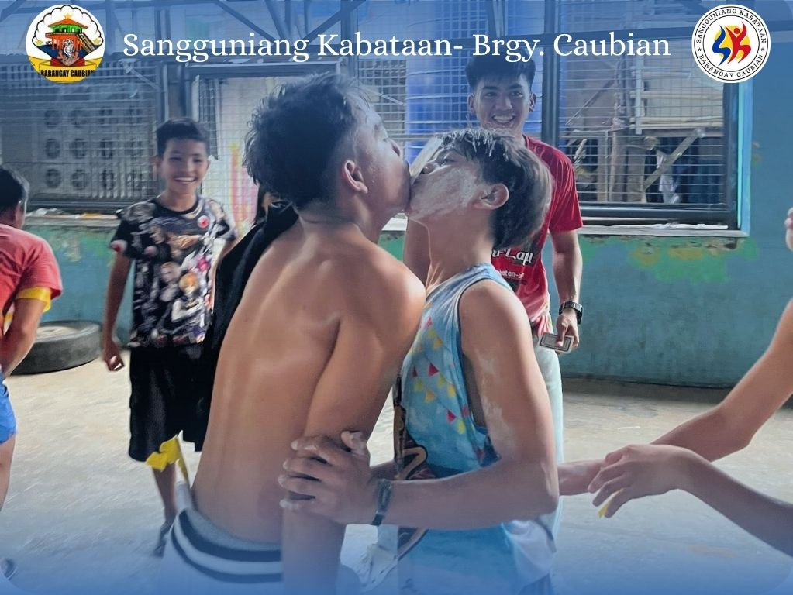

About Us
The Sangguniang Kabataan of Barangay Caubian is a team of youth leaders who were proudly elected by the people of Barangay Caubian during the 2023 Barangay and SK Elections (BSKE). Entrusted with the responsibility to represent the voice of the youth, we are committed to public service, community empowerment, and sustainable development. Guided by the mandate of our fellow young citizens, we strive to uphold integrity and accountability as we create meaningful programs that promote education, health, gender equality, drug awareness, and digital literacy.
Through collaborative efforts, we aim to build a stronger and more inclusive Barangay Caubian, where every youth is empowered to contribute to the progress of our barangay.
Meet the Team
Dianne Nicole C. Lumapas
SK Chairperson

Riza S. Cabanday
SK Councilor

Ma. Odyssel A. Naparate
SK Councilor

Niño Junbert Boy B. Abano
SK Councilor

Abegail L. Viño
SK Councilor

Regina B. Aying
SK Councilor

John Vincent L. Aying
SK Councilor

Peter Paul L. Querubin
SK Councilor

Rica Abaño
SK Secretary

Sherlin Sombelon
SK Treasurer
SK Full Public Disclosure Policy
In line with our mandate of transparency, We, the Sangguniang Kabataan of Caubian
ensures that all financial statements, and resolutions are accessible to
the public.
Below are previews of our disclosure board along with downloadable official documents.


Comprehensive Barangay Youth Development Plan
Download PDFOur Key Initiatives
Basic Life Support & First First Aid Training
Equipping participants with essential emergency response skills to handle medical situations effectively and confidently.
Drug Awareness & Prevention Symposium
Educating the community about the dangers of drug abuse and promoting healthy, drug-free lifestyles through awareness campaigns.
Gender Sensitivity Seminar
Fostering understanding and respect for all genders by addressing stereotypes, biases, and the importance of inclusive behavior.
Path to Career Seminar
Guiding the Youth in making informed career choices through mentoring, skill-building, and exposure to various career paths.
Coastal Clean-ups
Community-driven efforts to remove trash and debris from beaches and shorelines, helping protect marine life and preserve natural beauty.
SK League
A sports festival that promotes camaraderie, teamwork, and healthy competition among youth through various athletic events.
Parol Contest
A festive competition showcasing creativity and tradition through the design and display of colorful Filipino Christmas lanterns.
Resources & Downloads
Gallery
Basic Life Support & First First Aid Training

 



 



 


Drug Awareness & Prevention Symposium


Gender Sensitivity Seminar


Path to Career Seminar


Linggo ng Kabataan (2025)


 



SK League


Contact Us
Email: barangaycaubianllc@gmail.com
Phone: (63+) 9942817323
Facebook: Sangguniang Kabataan - Barangay Caubian